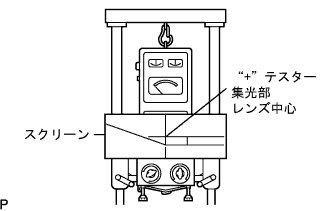

Headlamp ASSY adjustment |
| 1. Work before adjusting head lamps |
Adjust the tire air pressure accurately.
One person (55kg) in the driver's seat.
Start the engine and charge the battery.
Full fuel, oil and water.
Shake the vehicle up and down and settle the suspension to the normal state.
 |
Make the dial of the leveling switch to 0.(Manual revenging car)
| 2. Head lamp optical axis adjustment (when using low beam tester) |
The distance between the tester and the headlamp lens is set to the tester's specified value.
Make the tester right to the vehicle.
 |
Set the head lamp tester.
The angle adjustment knob of the tester is 10 cm lower and 0 cm left and right.
Match the tester's integration lens at the center of the headlamp.
A treatment is not affected by the light of the other lamp.
Lights the headlamp with a low beam.
The light beam optical axis is adjusted based on the instruction manual of the head lamp tester to be used.
| 3. Head lamp light -degree inspection (when using low beam tester) |
After adjusting the optical axis, check the lightness with the head lamp tester.
| 4. Head lamp optical axis adjustment (when using low beam screen) |
 |
Prepare a thick blank paper.
|  |
Create a screen for adjusting the figure.
The distance between the tester and the headlamp lens is 3m.
Make the tester right to the vehicle.
Set the head lamp tester.
Combine the center of the tester's light lens around the headlamp.
The center hole of the adjustment screen for the tester is centered on the tester and paste it with a tape.
A treatment is not affected by the light of the other lamp.
Lights the headlamp with a low beam.
If the line is larger from the reference line, adjust the light beam optical axis so that the light and dark split line fits the position of the reference line.
| 5. Head lamp light -degree inspection (when using low beam high beam tester) |
The distance between the tester and the headlamp lens is set to the tester's specified value.
Make the tester right to the vehicle.
 |
Set the head lamp tester.
The angle adjustment knob of the tester is 11cm lower and 23cm left.
Match the tester's integration lens at the center of the headlamp.
A treatment is not affected by the light of the other lamp.
Lights the headlamp with a low beam.
After adjusting the optical axis, check the lightness with the head lamp tester.
| 6. Head lamp optical axis adjustment (when using high beam tester) |
The distance between the tester and the headlamp lens is set to the tester's specified value.
Make the tester right to the vehicle.
|
Set the head lamp tester.
The angle adjustment knob of the tester is 1/5cm at the center of the lower head lamp, and 0cm on both left and right.(Left headlamp)
The angle adjustment knob of the tester is set to 1/5cm in height at the center of downward headlamps and 5cm left.(Right head lamp)
Match the tester's integration lens around the headlamp.
A treatment is not affected by the light of the other lamp.
Lights the headlamp with a high beam.
Adjust the optical axis of the high beam based on the handling of the head lamp tester to be used.
| 7. Head lamp lightness inspection (when using high beam tester) |
After adjusting the optical axis, check the lightness with the head lamp tester.